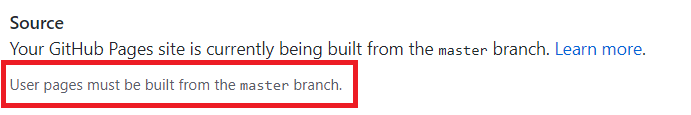

GitHub提供了GitHub Page功能，相当于免费开了一个不限量（反正不可能用完）的博客空间，那么，为什么不嫖一下呢🙃
实际上GitHub官方有意无意地推荐使用Jekyll来做静态博客。不过Jekyll是采用Ruby写的，本地预览还要搭环境。还是用node下的Hexo比较对我胃口。思路有了，那就开工做呗。
博客嘛，基本上就一静态网页（特别是GitHub Page）。hexo也是比较完善的框架了，使用起来也十分方便。
Hexo的安装
hexo 全局安装
cnpm i hexo -g由于我已经把全局npm库加到path里了，所以直接在命令行里可以用hexo命令，没加的小伙伴自己加一下path。
hexo 使用
hexo init MyProject
cd MyProject
hexo server这样就能跑了，可以说是相当简单了。然而比较麻烦的是部署，想要部署在GitHub Page上，要hexo generate然后再上传才行，或者使用hexo-deployer-git插件，然后用hexo deploy。但总觉得不够优雅。
GitHub Action
对于部署这个问题，hexo给出的办法是找第三方CI。看起来也不错，然而事情当然没这么简单。
教程中的第🔟步
在 GitHub 中前往你的 repository 的设置页面，修改 GitHub Pages 的部署分支为 gh-pages。
这步已经失效了，GitHub当前只允许你把站点部署在master分支上。
这就比较蛋疼了，当然第三方CI也能用，但需要自己写部署文件，尝试了半天都没成功，本来准备放弃的，但看到GitHub的新功能GitHub Actions，发现原来GitHub已经有自己的CI了，这就可以搞搞了。
参考了网上的众多教程后，发现操作还是比较简单的。
首先是开两个库，一个私人库来放hexo源文件，另一个就是传统的公开库username.github.io，操作都在hexo源文件库里完成，username.github.io只是被动接受。
- 找
GitHub要Token - 打开项目设置，在
Secrets加一个GH_TOKEN，值就是刚才的Token - 在项目里新建
.github/workflows/abc.yml，把以下内容贴上去
name: Hexo deployer # Actions 名字
on: # 触发条件
push:
branches:
- master # 仅向 master 分支 push 时触发，该分支存放博客源文件
jobs:
build: # job id
name: Build and publish # job 名，不写默认使用 job id
runs-on: ubuntu-latest # 运行环境，可选 ubuntu-latest, ubuntu-18.04, ubuntu-16.04, windows-latest, windows-2019, windows-2016, macOS-latest, macOS-10.14
steps:
- uses: actions/checkout@v1 # 拉取博客最新源文件
- name: Use Node.js 10.x # 指定 Node.js 版本
uses: actions/setup-node@v1
with:
node-version: 10.x
- name: Setup Hexo env # 初始化 Hexo 环境
run: |
npm install hexo-cli -g
npm install
- name: Generate public files # 生成博客预发布文件
run: |
hexo clean
hexo g
- name: Deploy # 发布
env:
GH_REF: github.com/username/username.github.io.git # GitHub 仓库 SSH 地址
GH_TOKEN: ${{ secrets.GH_TOKEN }} # 预先生成 GitHub Token
run: |
git config --global user.name "username"
git config --global user.email "user@email.com"
git clone https://${GH_REF} .deploy_git
cd .deploy_git
git checkout master
cd ../
mv .deploy_git/.git/ ./public/
cd ./public/
git add .
git commit -m "CI built at `date +"%Y-%m-%d %H:%M:%S"`"
git push --force --quiet "https://${GH_TOKEN}@${GH_REF}" master:master然后就是add commit push三连，不出意外的话，GitHub Page就应该跑起来了。接下来就是折腾下hexo。